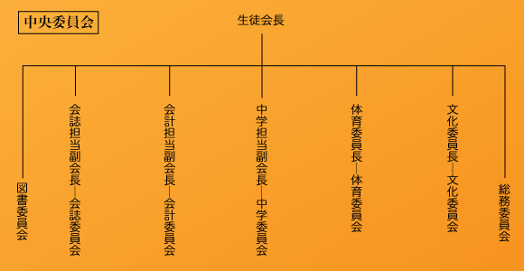

中央委員会は、学校行事を運営する機関です。
中央委員会は、生徒会長・会計担当副会長・会誌担当副会長・中学担当副会長・文化委員長・体育委員長の六人からなり、各々毎年六月に行われる選挙で選出され、一年間の任期の間、付属機関と共に任務にあたります。
ここでは中央委員会の総務委員会・会計委員会・会誌委員会・中学委員会・文化委員会・体育委員会について説明します。
なお、総務委員会の付属機関については、総務委員会・図書委員会のページをご覧ください。
生徒会長直属の、とても重要な位置を占める機関であり、その仕事は多岐に渡ります。委員会内には付属機関として、広報委員会・福祉委員会・ 美化委員会・交流委員会・土曜講座委員会・食堂委員会がありますが、その他にも委員会が設置される場合もあります。
生徒会長は、中央委員会の代表であり、生徒会全体の代表でもあります。様々な行事の総責任者になり、また、様々な企画や委員会を考えて実行します。他校との交流も生徒会長の役目の一つです。
生徒会長という役職は、かなりの権限を与えられているので、それなりの自覚が必要です。被選挙権は、高一と高二にあります。
会計担当副会長は、行事やクラブで使われる費用について予算をたて、その適正な執行を監督します。生徒会で行事や企画を実施するための費用は主に生徒会費から出されます。これを分配するのが、会計の仕事です。また、クラブとの折衝で、各クラブの予算割り当ても決定します。
会計担当副会長は相当の金額を動かす役職なので、責任は重大です。被選挙権は、高一と高二にあります。
会誌担当副会長は、毎年『ＮＡＤＡ』という名の生徒会誌を発行します。その生徒会誌を編集、製作するのが会誌担当副会長の仕事です。
会誌委員と共に行う仕事は、原稿回収・企画・校正・レイアウト・広告集めなどたくさんあり、かなり大変です。こうした苦労の上に、毎年素晴らしい会誌が作られています。被選挙権は、高一と高二にあります。
中学担当副会長は、主に中学学芸祭の運営と、新入生に向けた灘校紹介冊子『灘校ガイド』の発行をします。付属機関である中学委員会は、中央委員会唯一の中学生だけの機関で、新中一の皆さんでも気軽に入ることができます。
また、中学担当副会長は、この中学委員会の委員長である、中学委員長を兼任します。被選挙権は、中三にあります。
文化委員長は、文化祭や高校学芸祭の企画・運営を中心に、文化部の統率などもします。
文化祭の準備は文化委員と共に数ヶ月前から始まり、企画立案から、資材の分配、先生や外部との交渉、パンフレットなどの作成・配布、そして、当日には進行、後片付けなど、仕事がたくさんあります。このような行事前には大変忙しくなりますが、その分、得られるものも多く、大きな感動を多くの人と共に感じることができます。被選挙権は、高一と高二にあります。
体育委員長は、体育祭やスポーツ大会、甲南定期戦、駅伝大会などにおける仕事を行う体育委員会の委員長を務めます。
体育祭の準備は夏休みから始まり、体育祭前になると準備で忙しくなりますが、文化委員会同様、とてもやりがいのある委員会です。被選挙権は、高一と高二にあります。